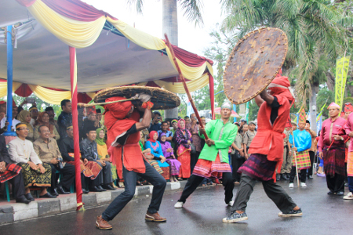
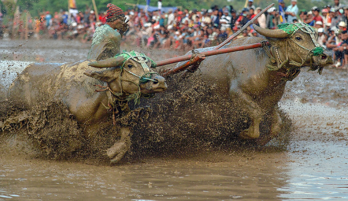
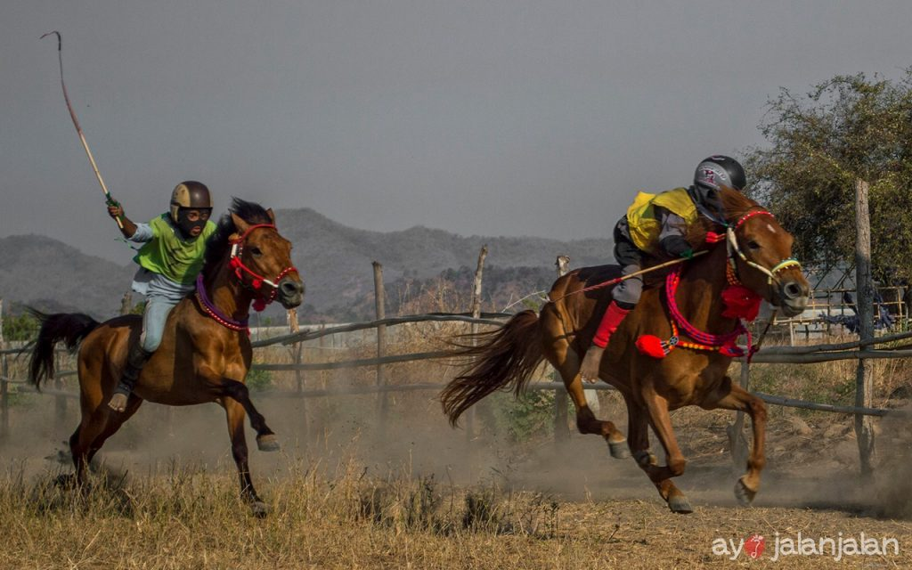
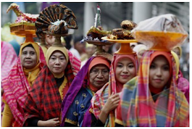

-

Seni permainan yang sudah berlangsung ratusan tahun ini merupakan hiburan bagi para raja di Sumbawa. Karaci terdiri dari dua orang dewasa suku asli Sumbawa (Suku Samawa), seorang wasit pemisah, dan sandro (dukun) yang bertugas mengobati luka petarung karaci,Para petarung menggunakan tongkat yang disebut sesambu dan perisai yang terbuat dari kulit kambing atau kerbau (empar). Di iringi dengan gerak tari (ngumang) petarung memulai karaci sambil berbalas pantun yang bertujuan untuk mencari lawan bertarung. Setelah menemukan lawan para petarung akan saling pukul untuk menentukan pemenang,Tidak hanya saling pukul dan menahan pukulan lawan makna dibalik permainan karaci memiliki sifat keberanian, kejantanan dan kekebalan yang bertujuan agar kaum lelaki Suku Samawa berani mempertahankan bumi Sumbawa dari orang yang ingin menghancurkannya. Inilah awal mula karaci tersebar di masyarakat Sumbawa hingga akhirnya menjadi tradisi yang merakyat.
-

Ketika Madura memiliki tradisi karapan sapi dan Sumatra Barat mempunyai tradisi pacu jawi, tak ketinggalan Pulau Sumbawa juga memiliki barapan kebo yang menjadi kebanggaan masyarakatnya,Barapan kebo dilaksanakan di area sawah basah dan berlumpur, tugas utama para joki adalah mengambil saka yaitu tongkat kayu yang ditancapkan di salah satu sudut sawah dalam waktu sesingkat-singkatnya. Yang berhasil mendapatkannya dialah pemenangnya. Para peserta tidak mengincar hadiah yang diberikan, barapan kebo lebih menjadi arena pertaruhan harga diri dan martabat. Selain itu juga kerbau yang berhasil jadi juara bisa dijual dengan harga yang sangat tinggi.,
-

Maen jaran atau pacuan kuda sudah populer sejak zaman kolonial Belanda dan sampai saat ini masih dipertahankan oleh masyarakat Sumbawa. Maen jaran biasanya diadakan setelah musim panen sebagai cerminan rasa syukur masyarakat, dan jokinya adalah anak-anak yang masih duduk dibangku SD berusia sekitar 9-12 tahun.Selain menjadi atraksi hiburan, maen jaran juga menjadi ajang untuk meningkatkan harga jual kuda karena kuda yang menjadi pemenang biasanya memiliki harga jual yang tinggi yaitu bisa mencapai ratusan juta rupiah. Maen jaran dapat disaksikan di Arena Pacuan Kuda di daerah Desa Penyaring, Kecamatan Moyo Utara.
-

Upacara Nyorong merupakan salah satu bagian dari prosesi pernikahan putra-putri Sumbawa, Nusa Tenggara Barat yang merupakan upacara mengantar barang-barang dari pihak keluarga calon pengantin laki-laki ke tempat calon pengantin perempuan. Biasanya barang-barang yang diantar berupa: bahan makanan pokok, bahan pembuat kue, ternak, pakaian, serta tempat tidur. Barang-barang tersebut diantarkan beramai-ramai dan dipimpin oleh tokoh masyarakat atau tokoh agama. Selain itu juga Upacara Nyorong dijadikan sebagai acara silaturahmi antara kedua pihak keluarga pengantin.

Batu Alang merupakan sebuah desa yang berjarak 4 Km dari Sumbawa Besar dimana masyarakatnya memiliki keahlian sebagai pandai besi. Keahlian ini mereka wariskan secara turun temurun dari para leluhur mereka dengan tetap mengikuti teknik dan pola tradisional. Jika berkunjung ke desa ini kita akan melihat langsung proses pembuatan senjata seperti parang, pisau, dan alat pertanian lainnya.